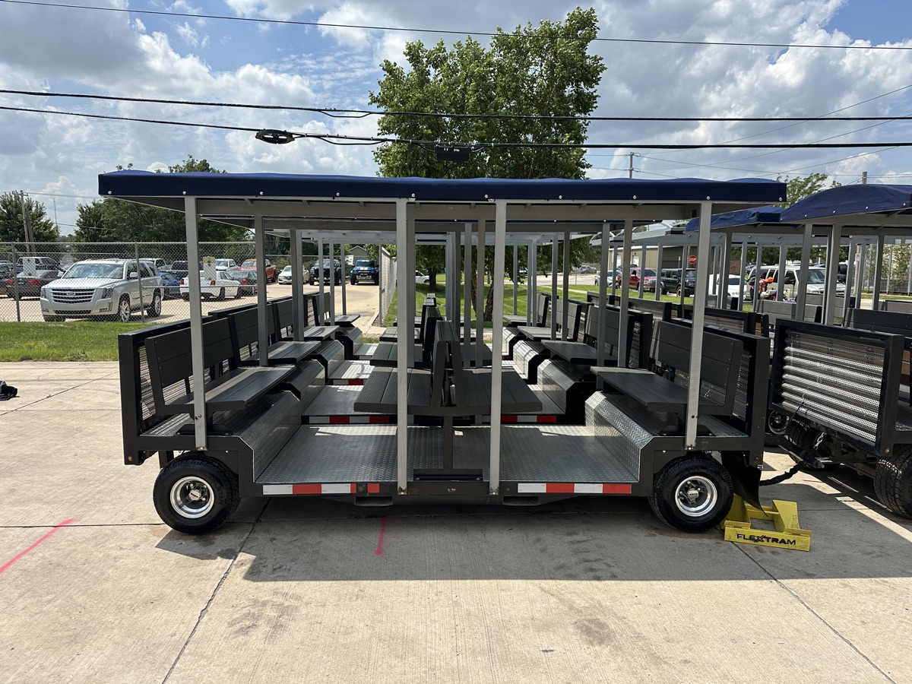

Airport & FBO transport
Your FBO deserves better
than a golf cart.
Most airports run 6-seat golf carts or 12-passenger sprinter vans for ground transport. FlexTram carries up to 27 passengers in a single run — with one driver — cutting your cost per passenger and your headcount requirements simultaneously.
The problem
What your current fleet
is really costing you
The solution
One tram. One driver.
Up to 27 passengers.
FlexTram is purpose-built for high-volume ground transport across airport tarmacs, remote lots, and FBO ramps. Where a sprinter van tops out at 12 passengers and a golf cart at 6, a single FlexTram handles up to 27 passengers in one run — with one driver.
That math changes everything. Where you needed 4 drivers and 4 vehicles to move 50 passengers, you now need two FlexTrams and two drivers. Fewer vehicles also means lower insurance exposure and fewer liability events on the ramp. Operators who've made the switch consistently report driver headcount reductions of 50–70% for the same or higher throughput.
And when the season ends or the contract changes? FlexTram stores easily — no dedicated infrastructure, no stranded fleet. Scale up or down as your operation demands.
Driver labor — FlexTram vs. alternatives
One FlexTram
27 passenger capacity
1 driver required
Five 6-seat golf carts
25 passenger capacity
5 drivers required
Two sprinter vans
28 passenger capacity
2 drivers required
Labor only. Excludes benefits, fuel, maintenance, and insurance. Golf cart drivers ~$31k/yr · Sprinter van drivers ~$38k/yr · FlexTram operator ~$31k/yr.
Specifications
Where we operate
Common questions
Can a tram replace a sprinter van fleet for airport ground transport?
Yes — one FlexTram carries up to 27 passengers versus 12 for a sprinter van. In most operations, two FlexTrams replace 4–5 vans while reducing driver headcount by 50% or more.
How many drivers do I need to operate a FlexTram fleet?
One driver per FlexTram. That's the core efficiency gain — instead of staffing one driver per vehicle across a large fleet, you consolidate passengers into fewer, higher-capacity runs.
What's the total cost of ownership vs. a sprinter van or golf cart fleet?
When you factor in driver labor, fuel, maintenance, and insurance across a multi-vehicle fleet, most operators see 50–65% lower total operating cost per passenger. Labor savings and reduced liability exposure alone typically justify the switch.
Can FlexTram be used as a temporary or pop-up shuttle solution at an airport?
Yes. FlexTram is designed to deploy without permanent infrastructure — making it ideal for temporary lots, seasonal surges, construction detours, or one-time events. It stores compactly when not in use.
Is FlexTram suitable for tarmac and airside environments?
FlexTram is compact — and designed for the tight turning radii and low-speed precision that ramp environments require. Specific airside compliance varies by airport authority.
Does FlexTram offer ADA-compliant configurations for airport use?
ADA accessibility is standard, not an add-on. All FlexTrams include accessible boarding, appropriate aisle widths, and can be configured with additional accessibility features on request.
Ready to right-size your fleet?
Tell us about your operation — passenger volume, current fleet, key routes — and we'll build a custom quote with projected driver and cost savings.
Other industries
Request Info →